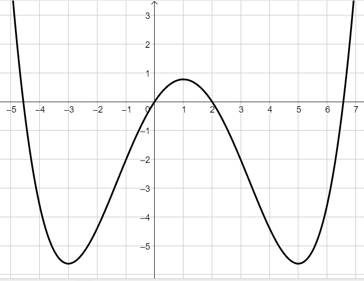
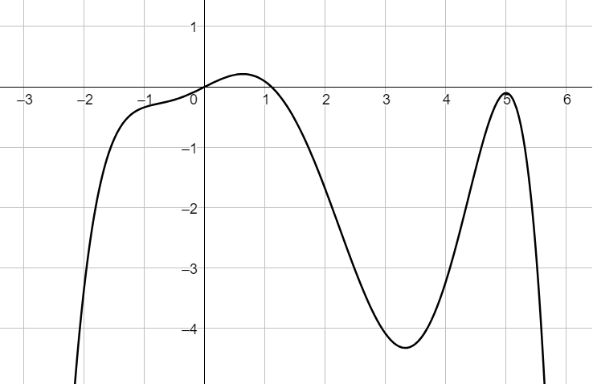
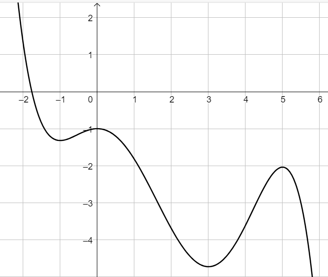
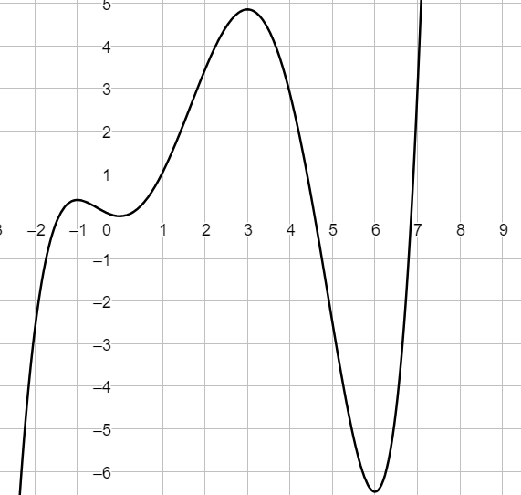
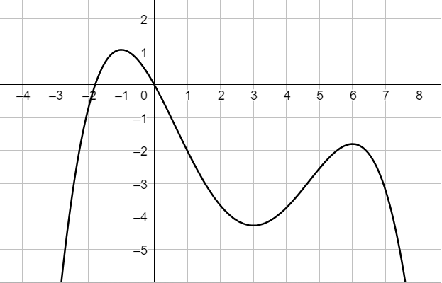

Consideriamo la funzione \(f\) avente il seguente grafico

Stabilire se le affermazioni di seguito sono corrette.
Motivare la risposta (sul quaderno).
-
La derivata di \(f\) in \(x = -2\) è positiva
(in simboli: \(f'(-2) \gt 0\))
-
\(f'(0) \lt 0\)
-
Esiste un unico valore di \(x\) per il quale la derivata della fuzione \(f\) vale \(0\).
-
\(f'(x) \gt 0\) per ogni \(x \in \left(-3\,;\,\,1\right)\)
Consideriamo una funzione \(h\) avente le seguenti proprietà:
\[
\begin{align*}
h(0) = 0 &\qquad h'(2) \lt 0
\\\\
h(5) \lt 0 &\qquad h'(4) \gt 0
\\\\
\color{transparent}{}h(?) = ?\color{black}{} &\qquad h'(0) = 0
\end{align*}
\]
Nessuno dei seguenti grafici rappresentare la funzione \(h\).
Per ognuna delle opzioni, spiegarne il motivo.
Grafico A)

Grafico B)

Grafico C)

Grafico D)
